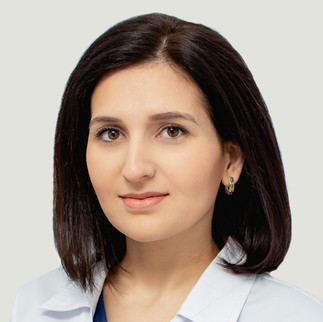
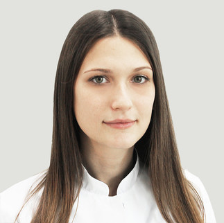

Коркмазова Динара Аслановна
Врач-офтальмолог, рефракционный хирург
Нальчик
Пятигорск
Назрань
Коркмазова Динара Аслановна
Нальчик
Пятигорск
Назрань
О враче
- Взрослое лечебно-диагностическое отделение
- Заместитель главного врача по клинико-экспертной работе
- Врач-офтальмолог, рефракционный хирург
- 12 лет стажа работы
- Более 5000 проведенных операций
- Врач I категории
Образование
- 2005–2011 г. — обучение в ФГБОУ ВО «Кабардино-Балкарский государственный университет им. Х.М. Бербекова», Медицинский факультет по специальности «Лечебное дело».
- 2011–2013 г. — клиническая ординатура МНТК «Микрохирургия глаза» им. академика С.Н. Федорова, г. Москва.
Повышение квалификации
- 2016 г. — Сертификационный цикл повышения квалификации по теме: «Рефракционная офтальмохирургия» на базе ФГБОУ ДПО ИПК ФМБА России, г. Москва;
- 2016 г. — Повышение квалификации «Оптическая когерентная томография и флюоресцентная ангиография» на базе НИИ Глазных болезней им. Гельмгольца, г. Москва.
- 2018 г. — Сертификационный цикл повышения квалификации ЧУ ДПО Центр повышения квалификации «АстроМедФарм».
- 2018 г. — Профессиональная переподготовка: «Организация здравоохранения и общественное здоровье».
- 2019 г. — Цикл повышения квалификации на тему: «Контроль качества медицинской деятельности».
- 2019 г. — Цикл повышения квалификации: «Экспертиза временной нетрудоспособности».
- 2019 г. присвоение квалификационной категории на базе Федерального Медико-Биологического агентства (ФМБА России) г. Пятигорск.
Профессиональные навыки
- Проводит эксимерлазерную коррекцию миопии, гиперметропии, астигматизма методом LASIK, LASEK.
- Владеет современным методом лечения кератоконуса: кросслинкинг роговичного коллагена.
- Регулярно принимает участие во Всероссийских и международных научно-практических конференциях по офтальмологии.
Достижения
- Автор 6 статей, 3 из них опубликованы в ВАК.
- Имеет патент на изобретение.
Отзывы пациентов
18 июня 2023
Габоева Аминат Муссаевна
Добрый день. В клинику обратилась для диагностики зрения ребенка. Хотелось бы отметить в первую очередь вежливое отношение персонала и высокое качество предоставлямых услуг, начиная с администратора и заканчивая медсестрами и врачом.Особенно благодарна врачу Картлыкову М.Р. за внимательное отношение, подробные разъяснения и рекомендации в дальнейшем. Спасибо им за их ответственное отношение к своей работе
18 июня 2023
Мухамат Юсуф Фариал

9 апреля 2023
Анзорова Елизавета Кушуковна
Огромная благодарность врачу Хасаоувой Лейле Мухарбиевна и офтальмахирургу Романенко Борису Витальевичу. Команда профессионалов! Сделали операцию по удалению катаракты на оба глаза. Результат потрясающий. Спасибо Вам большое и всех благ!!!
18 июня 2023
Габоева Аминат Муссаевна
Добрый день. В клинику обратилась для диагностики зрения ребенка. Хотелось бы отметить в первую очередь вежливое отношение персонала и высокое качество предоставлямых услуг, начиная с администратора и заканчивая медсестрами и врачом.Особенно благодарна врачу Картлыкову М.Р. за внимательное отношение, подробные разъяснения и рекомендации в дальнейшем. Спасибо им за их ответственное отношение к своей работе
18 июня 2023
Мухамат Юсуф Фариал

29 апреля 2023
Кузнецова Людмила Георгиевна
Здравствуйте. Хочу выразить огромную благодарность клинике за ответственное и заботливо отношение к клиентам и пациентам. Отдельная благодарность хирургу который меня оперировал Жемухову Анзору Борисович и его профессиональной команде! Операция катаракты прошла успешно, чувствую себя хорошо. Вижу глазом отлично. Огромное вам спасибо.
Другие специалисты
Смотреть всехКоркмазова Динара Аслановна
Врач-офтальмолог, рефракционный хирург
Нальчик
Пятигорск
Назрань

Алтухова Татьяна Викторовна
Врач-офтальмолог, рефракционный хирург
Пятигорск
Коркмазова Динара Аслановна
Врач-офтальмолог, рефракционный хирург
Нальчик
Пятигорск
Назрань
Алтухова Татьяна Викторовна
Врач-офтальмолог, рефракционный хирург
Пятигорск